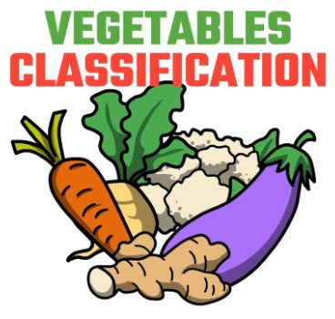
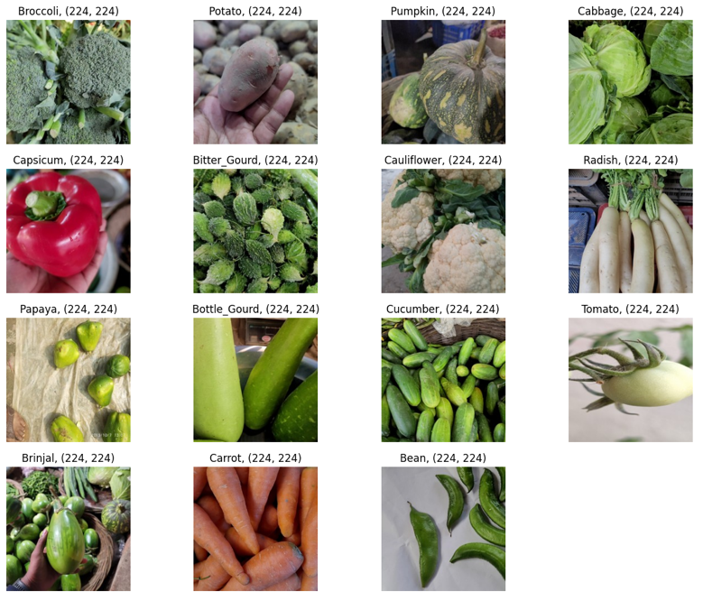
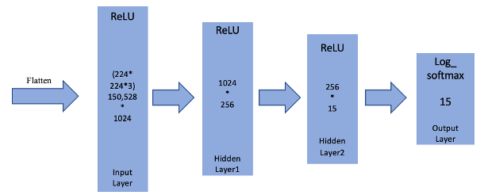
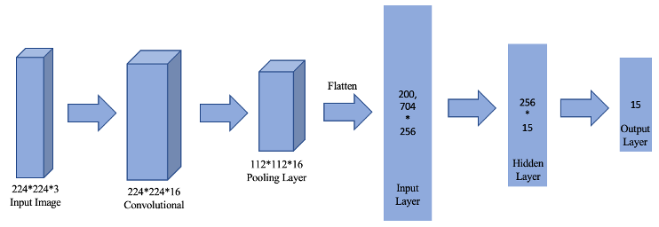
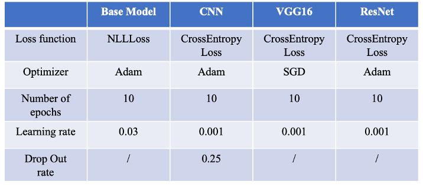
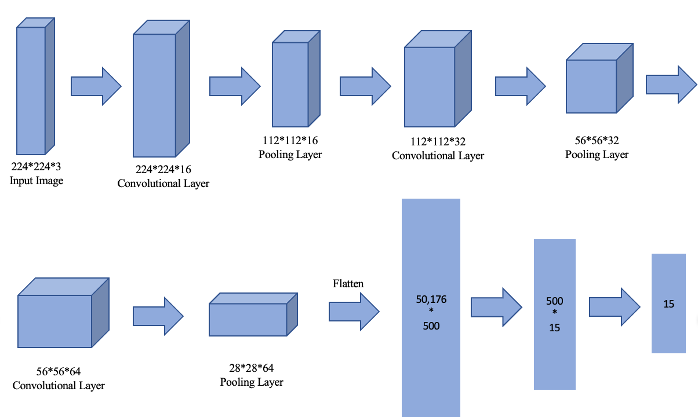
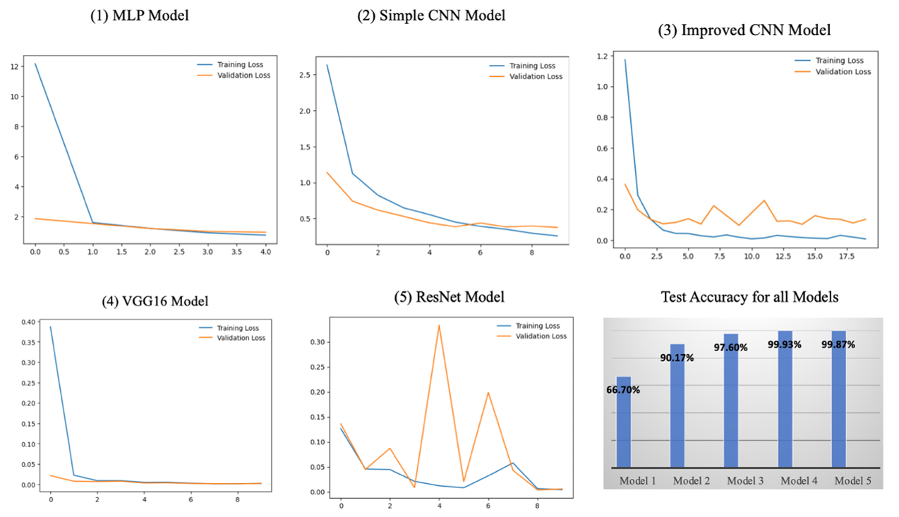
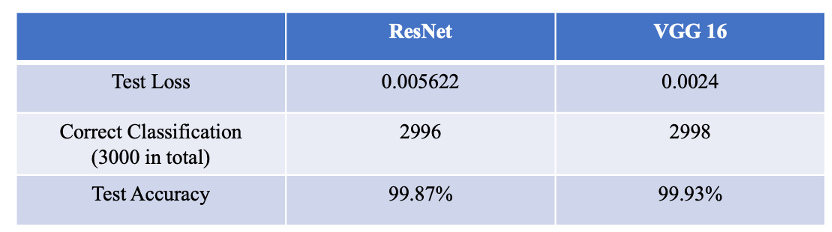

Vegetable Image Classification
MOTIVITION and DATA UNDERSTANDING
Background
With the increasing availability of image data and the advancements in computer vision, the task of recognizing vegetables from images has gained importance. Accurate classification can aid farmers in monitoring crop health, assist chefs in recipe recommendations, and provide consumers with an interactive grocery shopping experience.
Problem Description
The primary challenge we aim to tackle is the development of a robust and accurate vegetable image classification system. This involves training a machine learning model to recognize and categorize various vegetables based on their visual features. The model should be capable of handling diverse datasets, encompassing different types of vegetables, variations in lighting, and various angles of capture.
Key Objectives
• Train a machine learning model using a labeled dataset of vegetable images.
• Achieve high accuracy in classifying a wide range of vegetables commonly found in the market.
• Implement the model to handle real-world scenarios, considering variations in lighting conditions and image angles.
• Optimize the model for efficiency, enabling quick and accurate predictions.
Expected Outcomes
• A trained machine learning model capable of accurately classifying vegetable images.
• Improved efficiency in crop monitoring for farmers, leading to timely intervention in case of plant diseases or issues.
• Enhanced user experience for chefs, providing a tool for quick and accurate vegetable identification for recipe planning.
• A foundation for future developments in image classification, potentially expanding to other food categories.
Significance of the Project
The successful implementation of this project holds the potential to revolutionize how we interact with vegetables in various fields. From precision agriculture to culinary arts, accurate vegetable image classification can pave the way for innovative applications that positively impact different aspects of our daily lives.
Data Understanding
In this dataset there are 20,000 images from 15 classes, including Bean, Bitter Gourd, Bottle Gourd, Brinjal, Broccoli, Cabbage, Capsicum, Carrot, Cauliflower, Cucumber, Papaya, Potato, Pumpkin, Radish, Tomato. Each class has an equal proportion. The image resolution is 224×224 and in *.jpg format and the color channel is 3. These pixels are the features we will use to do the image classification. We visualized a random sample in each class to check the quality of the image data:

Data Source: https://www.kaggle.com/datasets/misrakahmed/vegetable-image-dataset
DATA PREPARATION
We split our dataset into three parts, where 70%(approx.) for training and 15%(approx.) for testing, and the rest 15%(approx.) for validation.
Training Data:
• 15,000 images for 15 classes (1000 images each)
• Size of each image is 224*224 and images are in *.jpg format.
Validation Data:
• 3,000 images for 15 classes (200 images each)
• Size of each image is 224*224 and images are in *.jpg format.
Test Data:
• 3,000 images for 15 classes (200 images each)
• Size of each image is 224*224 and images are in *.jpg format.
To better prepare image datasets for modelling, we set the target height and width (224*224) for images and applied preprocessing transformations including resizing and normalization. We made sure that the pixel values are scaled to have a mean of 0.5 and a standard deviation of 0.5 across each color channel. This helped create a standardized and stable input for the neural network, promoting better training and generalization performance.
We also created ImageFolder datasets for training, validation, and testing and employed the DataLoader to efficiently load batches of data during model training. We chose the batch size to be 128 and turned on the shuffle. Now out data is ready for modelling.
MODELING
Model Structure
Based on the property of our problem, we chose the following models and hyperparameters:
1. Multi-layer Perceptron Base Model:
There are 3 fully connected layers. The input layer has 224*224*3 neurons, connecting to a hidden layer with 1024 neurons, followed by another hidden layer with 256 neurons, and an output layer with 15 neurons. ReLU activation functions are applied to the hidden layers while log-softmax activation is applied to output layer for classification.

2. Simple CNN Model:
The CNN model has one convolutional layer, max-pooling, and two fully connected layers. The convolutional layer has 3 input channels, 16 output channels, and a kernel size of 3x3 with padding. Max-pooling reduces the spatial dimensions by half. The first fully connected layer has 112*112*16 input features, connecting to a hidden layer of size 256, followed by an output layer with the specified number of classes. ReLU activation functions are used in the convolutional and hidden layers, and dropout with a probability of 0.25 is applied for regularization.

3. VGG16 Model
The VGG16 model is valuable for image classification due to its deep architecture and proven performance. With 16 weight layers, including 13 convolutional layers, it captures intricate hierarchical features in images, allowing it to recognize complex patterns and shapes. The use of small 3x3 convolutional filters throughout the network promotes more effective feature learning. Therefore, we chose to use VGG16 as one of our models which strikes a balance between model complexity and interpretability.
4. ResNet Model
The ResNet model is also one popular model for image classification since it enables the training of very deep architectures. We initialized a pre-trained ResNet18 model and adapted it for CIFAR-2 classification by modifying the output layer to match the number of categories. This leveraged the pre-trained weights for feature extraction, allowing efficient transfer learning and improved convergence.
Hyperparameters Selection
The following table lists the hyperparameters we chose:

The loss function we used are NLLLoss and CrossEntropyLoss, which are applied for classification. And we chose Adam and SGD for optimizers. Due to the large pixel size and numerous features of these images, our training process is very slow. Therefore, we chose 10 as the number of epochs to mitigate the prolonged training time.
Pros and Cons
1. Multi-layer Perceptron (MLP) Base Model
• Pros: easy to understand; fast training speed.
• Cons: limited capacity (hard to capture complex hierarchical features); lack of spatial information (ignore spatial relationships in pixel values).
2. CNN Model
• Pros: better feature learning; moderate complexity (balance between simplicity and capacity).
• Cons: slow training speed; limited depth.
3. VGG16 Model
• Pros: hierarchical features (deep architecture captures intricate hierarchical features); transfer learning (pre-trained on large datasets, facilitating transfer learning).
• Cons: higher computational cost for deeper architecture; likely to overfit.
4. ResNet Model
• Pros: deep residual learning (address vanishing gradient problem, allowing deeper architectures); transfer learning.
• Cons: high computational cost; long training time.
IMPLEMENTATION
The challenge that we met in implementing is that the accuracy we got from simple CNN model is relatively low. We believed this was because the Simple CNN model has only one convolutional layer and pooling layer. Therefore, we are attempting to increase the depth of the network. Here is our improved CNN model:

RESULTS and EVALUATION
Training Results
We trained the above 5 models and recorded all the training losses and validation losses for each epoch. We chose validation loss and classification accuracy as our metrics to measure the performance of models. Here are the results:
Despite its simplicity, the simple Multi-layer Perceptron Model exhibits challenges in accurately classifying certain items, resulting in a test accuracy of 66.70%.
The CNN model demonstrates strong performance on the dataset, achieving a commendable 90% test accuracy. However, it seems to be overfitting after epoch 5.
Enhancements to the model, including increased depth, the incorporation of Batch Normalization, and Dropout layers, lead to remarkable improvements. The improved CNN model achieves a test accuracy exceeding 97%.
It generated the highest test accuracy at 99.93%. The training loss and validation loss path are almost overlapped and both close to 0, which also indicates that it performs quite well.
It also generated a high test accuracy at 99.87%. However, the validation loss fluctuates significantly and does not converge. It might be the result of high learning rate or overfitting.
Data Visualization

Test the Trained Network
Based on the above result, we chose ResNet Model and VGG16 Model as our final models since they generated highest accuracy. Here are the results of testing:

DEPLOYMENT
Application
Now the model can do the image classification for vegetables with an
accuracy higher than 99%.
In business scenarios, it is advantageous for enhancing self-checkout
machines: retailers can provide a faster and more efficient checkout
experience. Customers only need to place the vegetables on the
scanner, and the system will automatically recognize and calculate the
price, reducing manual intervention in the checkout process. This can
lead to a reduction in operational costs, decrease human errors, and
enhance the overall customer experience. Moreover, through the
vegetable recognition model, businesses can collect data on purchasing
behavior. This data can be utilized to analyze sales trends, optimize
inventory management, and even personalize product recommendations.
Ethical Consideration
An essential ethical concern lies in privacy concerns, specifically regarding the collection of data on purchasing behavior. Clear communication with customers about data usage and obtaining consent is paramount. Another ethical consideration is Job Displacement: the introduction of automation technologies, like self-checkout machines, could result in the displacement of traditional cashier roles. Businesses need to assess the social and economic impacts of these changes and proactively seek ways to retrain or transition affected employees. These ethical considerations are critical for ensuring responsible and equitable practices in the deployment of technologies in retail environments.
Related Risks
The model is not 100% correct. As the model keeps training more data, some biases would also arise. If machine misidentification leads to customer losses and subsequent complaints, companies may face legal disputes. Regularly auditing and evaluating the model's performance is crucial for businesses to address and mitigate biases.